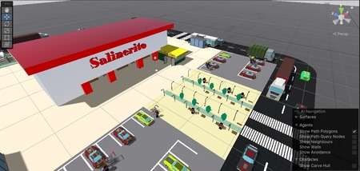
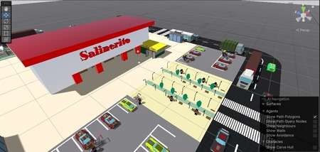

Proyectos universitarios
Proyecto IA
Proyecto realidad aumentada | 5to semestre
En este trabajo colaboramos con mis compañeros para realizar un recorrido virtual de la empresa el salinerito
Conoce todos los proyectos que e realizado y colabore a realizarlos
En este trabajo colaboramos con mis compañeros para realizar un recorrido virtual de la empresa el salinerito
Realizamos un proyecto de empresas textiles para saber como la empresa tenia sos datos numericos y si era factible invertir en esa empresa
Aqui realizamos la creacion de una empresa que sea innovadora para presentar como trabajo final de diferentes materias del semestre